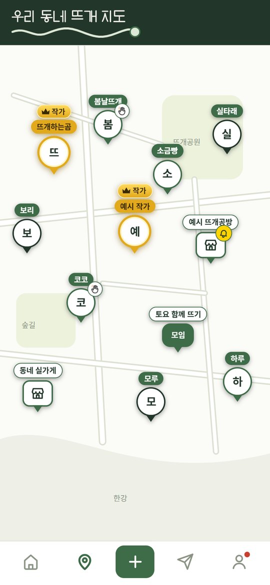
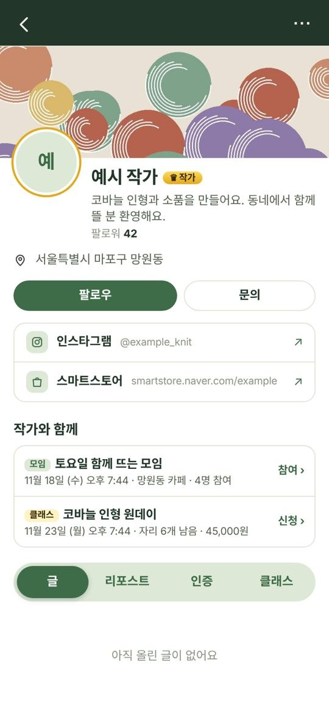

knitup · 작가님께 드리는 초대
작가님의 작품과 모임을 동네 뜨개인들과 이어 드리고 싶습니다
작가님, 안녕하세요. 닡업 매거진입니다.
우리 동네에서 함께 뜰 친구, 이른바 '뜨친'을 찾는 앱 knitup을 만들었습니다. 지도에서 근처 뜨개인과 작가님, 공방을 보고, 동네 모임과 클래스에 함께하는 앱입니다.
이 앱에 작가님을 '작가'로 모시고 싶어 연락드립니다.
앱은 이렇게 생겼어요


화면 속 이름과 내용은 예시예요.
작가가 되시면
- 지도에 황금색 작가 핀으로 보입니다. 이웃은 가까운 동네에서만 보이지만, 작가님은 전국 어디서 지도를 보든 보입니다.
- 나만의 작가 페이지가 생깁니다. 대표 사진과 소개, 작품, 인스타그램·스토어 같은 링크를 3개까지 걸 수 있습니다.
- 뜨개인들이 작가님을 팔로우하면, 모임이나 클래스를 여실 때마다 알림이 갑니다.
- 함께 뜨는 모임, 가르치는 클래스를 열고, 신청을 받아 확정한 분들과 채팅방으로 이어집니다.
- 뜨개인이 [문의]를 누르면 작가님과 바로 대화가 시작됩니다.
- 등록 비용이나 수수료는 없습니다.
참가비·수강료는 작가님이 직접 받으시고, knitup은 작가님과 동네 뜨개인을 이어 드리는 역할만 합니다.
시작하는 방법
- 1
앱 다운로드: 사용하시는 휴대폰에 맞는 버튼을 눌러 설치해 주세요.
- 2
앱을 열고 회원가입을 해주세요.
- 3
앱에서 쓰시는 닉네임을 이 메시지의 답장으로 알려 주세요.
- 4
확인하는 대로 작가로 등록해 드리고, 작가 기능 안내를 보내 드립니다.